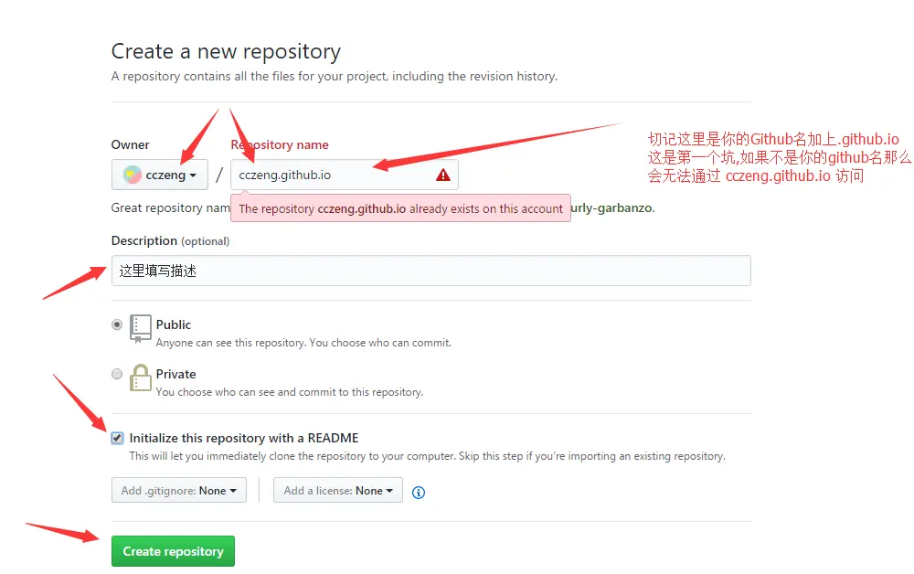
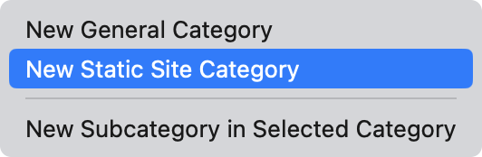
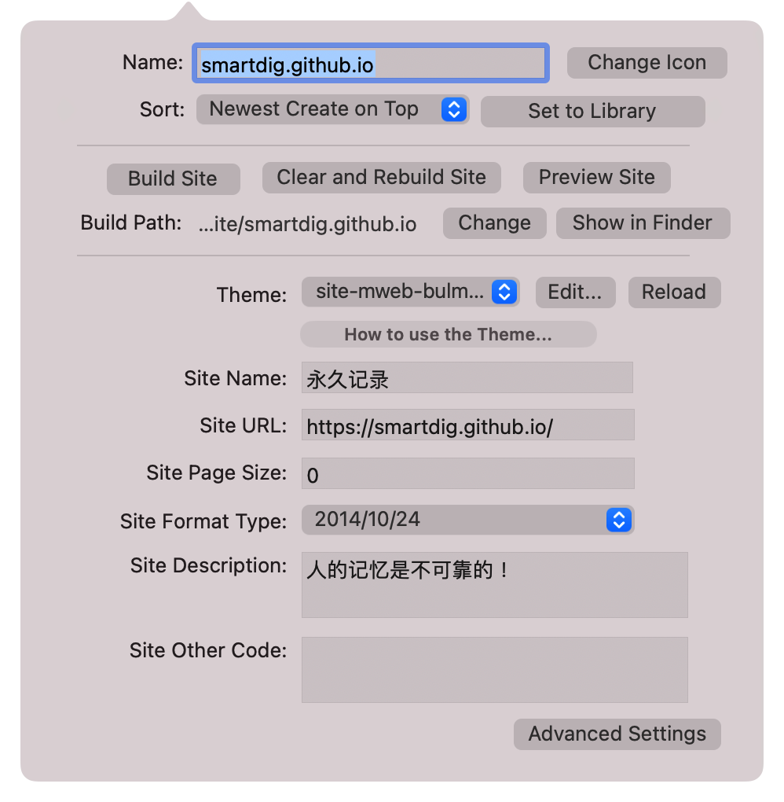
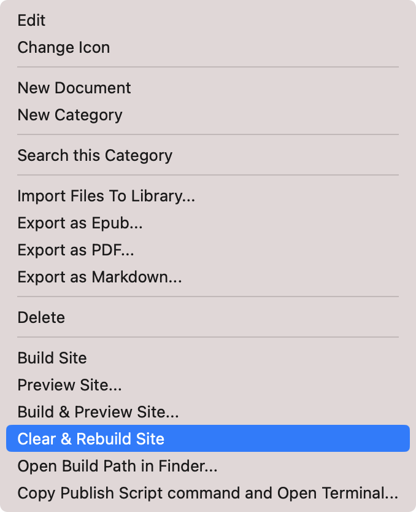
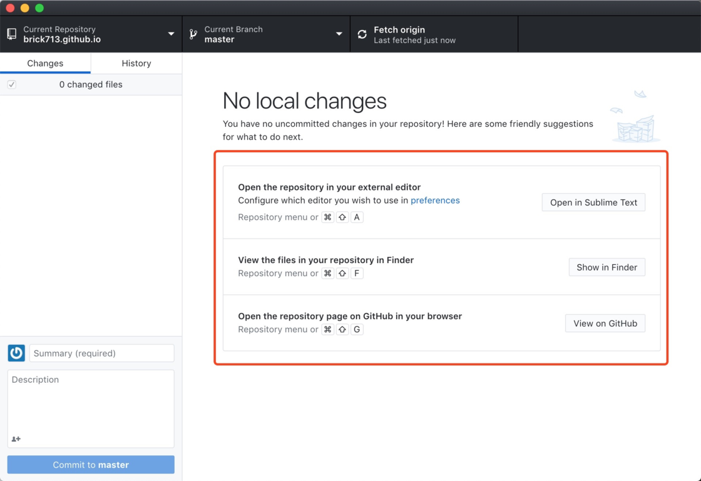

本文的静态博客，主要利用Github Page，也可以采用Cloudflare Page，方法类似。
安装前准备
安装两个软件Mweb Pro以及Github Desktop。
优点：无需命令行，简单，仅需关注内容创作。
也可以选择安装Gridea，不限平台，配置简单。
Github配置
首先注册Github帐号，并在个人主界面里选择创建一个新的仓库（Create a new repository）。
进入页面后，在Repository name的位置填写域名，格式是username.github.io。借一张图，按图设置：

以后你的博客网址便是https://username.github.io 。
Mweb Pro配置
网页配置
在Mweb Pro的设置中选择Library & Backup，设置Library Location以及Build Sites Save Location。
在Mweb Pro界面的左下角，加号选择New Static Site Category。

紧接着配置名称username.github.io、博客主题、站点名、网址URLhttps://username.github.io/、时间格式以及网站描述。

首次使用选择Build Site，也可以在博客有内容后再Build Site。这里的Build Path系自动生成，位置指向Build Sites Save Location下的子文件夹username.github.io。记住这个文件夹的位置，稍后要用到。
内容写作及预览
之后在Mweb Pro的侧边栏选择username.github.io，在该分类下新建文件。博客的所有文章都保存在该分类下。
在侧边栏username.github.io分类上点击右键，选择Clear & Rebuild Site，之后再选择Preview Site便会打开浏览器预览。

至此，本地静态博客完成。
Github Desktop配置
安装Github Desktop软件，登录后克隆你的仓库username.github.io。其中Local Path为上一步骤中设置的名为username.github.io的文件夹。
等待Clone完成后，界面上会显示几种管理修改你的项目的方式。借一张图，效果如下：

博客发布
打开Github Desktop。Github Desktop会在界面左侧显示文件夹的变动。
先点击Github Desktop左下角的Commit to master，再点击Push origin就可以将内容上传。之后便可以去https://username.github.io 查看博客最新内容。
进阶操作
可以修改主题，绑定个人域名，设置Cloudflare加速，还可以设置自动发布等。
参考资料